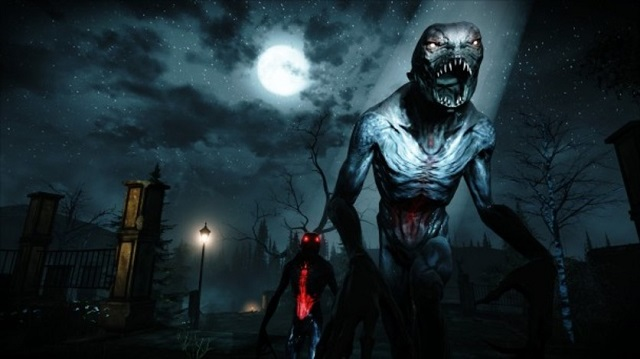

10 trò chơi khiến game thủ chỉ muốn vả lặt mặt hãng game - P.Cuối

Mortal Kombat: Lịch sử tràn đầy mỹ học về bạo lực của FATALITY – P.1

Reddit náo loạn sau tin Levi tái ngộ GAM
Reddit náo loạn sau tin Levi tái ngộ GAM
"Bom tấn" của GAM Esports đang khiến cộng đồng mạng không chỉ ở Việt Nam mà còn cả quốc tế nữa dậy sóng, rất nhiều ý kiến tiếc nuối khi 100T không giữ Levi. Vào ngày 15/5 vừa qua, đội tuyển Liên Minh Huyền Thoại GAM Esports đã công bố bản hợp đồng bom tấn của họ là Đỗ “Levi” Duy Khánh, cựu ngôi sao của chính họ cách đây 2 năm đã trở về sau một thời gian dài thi đấu không mấy thành công ở Bắc Mỹ và Trung Quốc. Cộng đồng quốc tế cũng đã tương đối chú ý tới sự kiện này1. [+698] Chốt hạ thì rào cản ngôn ngữ là một vấn đề rất lớn hơn mọi người nghĩ rất nhiều, đặc biệt là vị trí cần sử dụng nhiều giao tiếp như là đi rừng. ㄴ [+257] Ngôn ngữ là rào cản với mọi vị trí chứ không riêng gì vị trí đi rừng đâu. LPL đã phải mất hàng năm trời để dạy tiếng Trung cho các ngoại binh Hàn để vượt qua được rào cản ngôn ngữ mà. Đội nào sẽ quyết định đầu tư vào một kế hoạch mất tận 3 năm để có thể sinh lời như vậy chứ?
ㄴㄴ[+157] Và giờ đây họ có được TheShy, chủ lực của đội hình đang trên đường bảo vệ ngôi vô địch thế giới đó. ㄴㄴ [+144] Đúng là một kế hoạch dài hơi, tốn kém và rủi ro. Nhưng bù lại giờ đây LPL có TheShy và Rookie. Còn về trường hợp của Levi, có lẽ đơn giản là cậu ấy không có đủ sức nặng để được tin tưởng đầu tư dài hạn như vậy.
ㄴㄴㄴ[+81] TheShy và Rookie đã ở Trung Quốc được cỡ 4 năm rồi phải không? Họ gần như chắc chắn có thể giao tiếp ổn, Rookie thì đặc biệt nghe nói rất tốt luôn.
2. [+235] VCS mùa Hè sẽ xịn xò lắm đây anh em ơi!!! ㄴ [+106] Có thể sẽ là cuộc chiến đầy sức nặng giữa 2 đội – GAM vs PVB
ㄴㄴ[+34] EVOS không phải là một đội tốt ư?
ㄴㄴㄴ[+19] Hmm có vẻ vậy, họ mới đánh mất RonOP, Petland và hình như là cả Stark nữa.
3. [+91] GAM chuyển nhượng cậu ta với giá 11 tỷ, sau đó Levi đi học tiếng Anh và tiếng Trung trong cỡ 1 năm rưỡi, rồi giờ lại về với GAM. Lãnh đạo của GAM quả thực là một thiên tài kinh doanh.
4. [+1000] Một sự lãng phí tài năng. Thật sự mà nói thì 100T nên cảm thấy xấu hổ đi. ㄴ [+652] 100T và câu chuyện lãng phí tài năng muôn thủa của mình
ㄴ [+182] Bỏ qua Levi cả năm trời chỉ vì muốn dùng Ryu, thật là nực cười.
5. [+85] Liệu GAM có cơ hội xuất hiện ở CKTG năm nay không? Họ có điểm tích lũy ở giải mùa Xuân không vậy? ㄴ [+97] Chúng tôi mới có thêm một suất đi CKTG vào tuần trước và vẫn chưa rõ là suất đó sẽ được xác định như thế nào. Nhưng mà khả năng cao là nhà vô địch mùa Xuân và nhà vô địch mùa Hè (nếu là 2 đội khác nhau) sẽ có 2 suất đi. Tuy nhiên VCS mùa Hè sẽ cực kì gay cấn bởi hàng loạt những thay đổi về mặt nhân sự ở các đội. Và chưa chắc sẽ có một đội nào thực sự lên hay thực sự xuống cả, ngoại trừ PVB.
6. [+36] Thật buồn là không có đội tuyển nào ở phương Tây trao cho cậu ấy cơ hội cả. Levi có thể làm được nhiều thứ hơn là quay lại với VCS, khu vực hiện vẫn thuộc nhóm Wildcards và chỉ cố gắng thắng được 1-2 trận tại Chung Kết Thế Giới.
ㄴ[+42] Ngôn ngữ là một vấn đề rất lớn, không nhiều đội muốn bỏ ra cả năm trời để dạy ngoại ngữ cho một tuyển thủ cả. Đó là một sự lãng phí khoản đầu tư to lớn.
7. [+7] Điều này tốt cho cậu ấy, Levi xứng đáng được đánh chính nhiều hơn. Tôi cầu chúc cho cậu ấy gặp thật nhiều điều tốt đẹp.
8. [+2] Điều này thật tuyệt vời, khu vực VCS đang chứng tỏ rằng họ đang mạnh lên từng ngày…
Video Review
Về chúng tôi